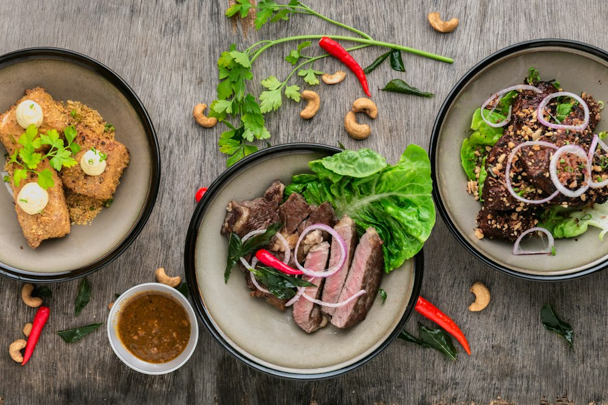
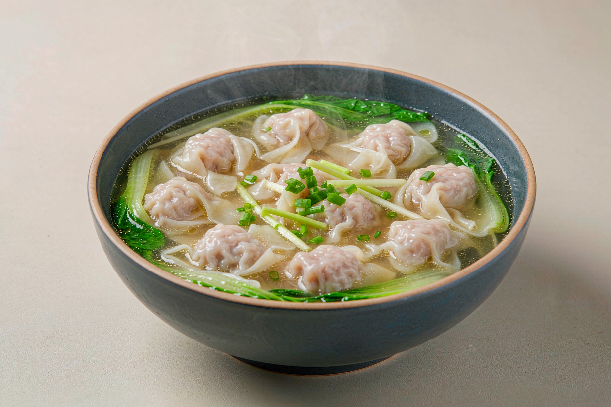
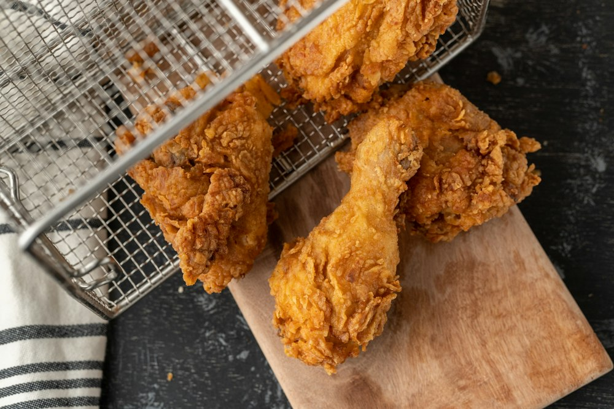

最动人的味道，往往不在高档酒楼，而在那些灯火通明的街巷深处。
几条老街，藏着最地道的市井滋味。

步行街脚下是叠压千年的古道，两侧云吞面、牛杂、双皮奶飘香，越夜越热闹。
骑楼底下，艇仔粥、肠粉、云吞面样样俱全，是老广州最经典的觅食路线。

短短几百米挤满老字号，云吞、濑粉、豆浆油条，一碗入魂，是本地人的心头好。
传统糖水铺与新派餐厅比邻，从潮州粿条到创意甜品，年轻人口味的天堂。
点击图片，放大看看这些让人垂涎的街头美味。
